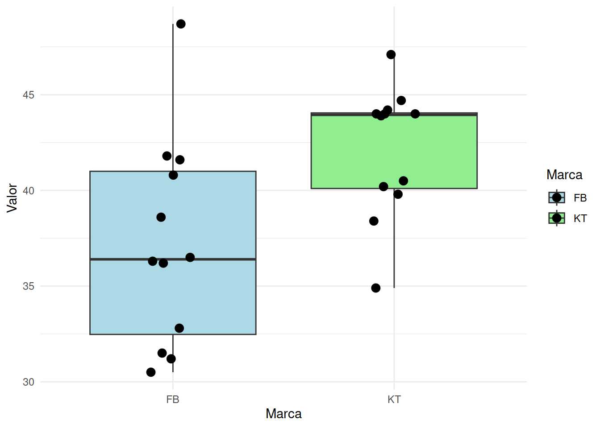

Suponga que se estudia la compra de una nueva maquina para una empresa. Se comprara la maquina si la proporción de la producción que necesita ser reprocesados por tener defectos es inferior al 5 %. Se examina una muestra de 40 artículos construidos por la maquina y 3 necesitan ser reprocesados . ¿ Que decisión se toma? ( Se compra o no la maquina?)
Solución
\(Ho : p \geq 0.05\)
\(Ha : p < 0.05\)
prop.test(3,40, p=0.05, alternative ="less")Warning in prop.test(3, 40, p = 0.05, alternative = "less"): Chi-squared
approximation may be incorrect
1-sample proportions test with continuity correction
data: 3 out of 40, null probability 0.05
X-squared = 0.13158, df = 1, p-value = 0.6416
alternative hypothesis: true p is less than 0.05
95 percent confidence interval:
0.0000000 0.1894048
sample estimates:
p
0.075 Como el p-value = 0.6416, es grande, no se rechaza Ho, se asume que es verdadera. Por tal motivo no se recomienda la compaera de la máquia.
Los ingenieros de una ensambladora de automóviles requieren decidir sobre cuál de dos de las marcas de neumáticos deben comprar. La marca FB o la marca KT. Con el fin de tomar una decisión basada en evidencias estadísticas, deciden realizar un experimento en el que usan 12 neumáticos de cada marca. Los neumáticos se utilizan hasta su terminación. Los resultados obtenidos son los siguientes:
FB =c(41.8, 41.6, 31.5, 48.7, 40.8, 31.2, 36.5, 36.2, 32.8, 36.3, 38.6, 30.5)
KT =c(40.5, 38.4, 44.0, 34.9, 44.0, 44.7, 44.0, 47.1, 39.8, 43.9, 44.2, 40.2)
Cuál marca de neumáticos recomendaría comprar. Justifique su respuesta. Suponga que la distancia recorrida por un neumático se distribuye aproximadamente normal y un α = 0,05.